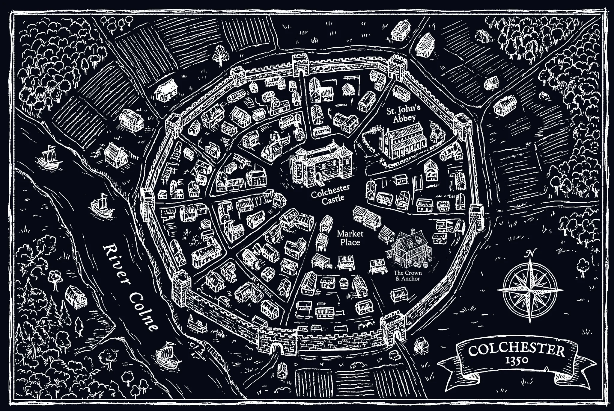

Choices recorded as you play.
Terms unlock as you progress.
Relentless rain rotted crops across northern Europe for seven years. Grain prices tripled. An estimated 10–25% of some regions starved — weakening bodies for what came next.
Plague reached England via Bristol in 1348 and killed 30–60% of the population within three years. No rank offered protection.
Parliament tried to freeze wages at pre-plague levels. Widely ignored — but still carried real legal risk. Enforcement depended entirely on your lord.
Labour shortages drove many manors from arable farming toward livestock. Sheep farming expanded dramatically in Essex. Not ideology — survival arithmetic.
Peasants began moving between manors for better wages. Desperate lords quietly ignored the rules. The legal fiction of serfdom was losing to the labour market.
Thirty years of resentment boiled over. Peasants from Essex and Kent marched on London, briefly occupied the Tower. The revolt failed — but accelerated the legal end of serfdom.
In a manor community, reputation determined whether the bailiff trusted you, whether neighbours loaned tools in a crisis, whether accusations would be believed in court.

Choices recorded as you play.
Terms unlock as you progress.
Plague reached England via Bristol in 1348...
In a manor community, reputation determined whether the bailiff trusted you...